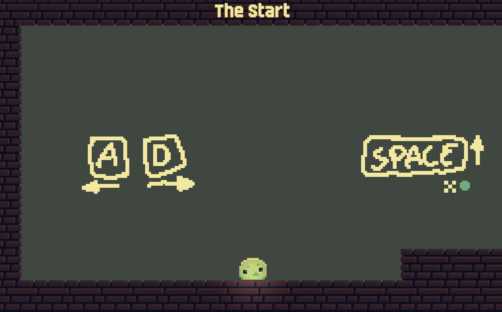
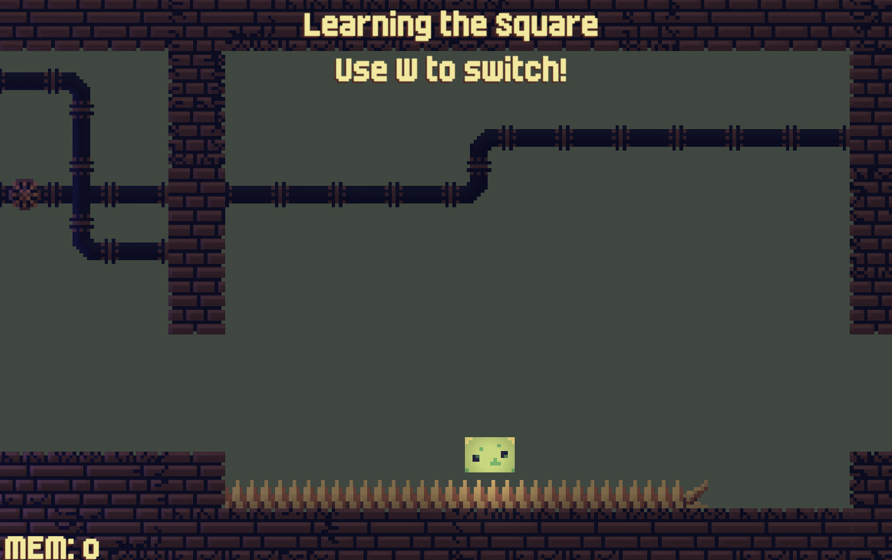

Amoeba Metroidvania
可变形态的横版平台游戏


项目概述
Amoeba Metroidvania是一款基于Unity开发的横版平台游戏，作为Major Studio Fall的第一个概念验证作品。游戏的核心机制是允许玩家在圆形和方形之间切换形态，以探索不同的路径和解决各种谜题。
游戏特点
- 变形机制：玩家可以在圆形和方形之间切换，每种形态有独特的能力
- 探索地图：类似银河恶魔城风格的地图设计，鼓励玩家探索和回溯
- 解谜元素：需要灵活运用不同形态的特性解决环境谜题
- 平台挑战：精心设计的平台跳跃挑战，测试玩家的技巧
我的贡献
作为开发团队的成员，我参与了游戏机制的设计与实现，特别是：
- 角色变形系统的核心逻辑实现
- 部分关卡设计与环境谜题创建
- 玩家控制系统优化，提升游戏手感
- 参与游戏性测试与平衡调整
开发心得
开发这款游戏的过程充满了挑战与收获。最具挑战性的部分是设计一个既有趣又平衡的变形系统，确保两种形态各有特点且不会使游戏过于简单。我们花了大量时间调整角色的物理属性和控制手感，以确保玩家在两种形态间切换时感觉流畅自然。
在这个项目中，我学到了很多关于Unity中物理系统的知识，以及如何设计有意义的游戏机制。这个项目也让我深入理解了Metroidvania类游戏的设计哲学，特别是如何通过解锁新能力来逐步开放游戏世界。
技术栈
- Unity游戏引擎
- C#脚本编程
- 2D物理系统
- 角色控制器设计